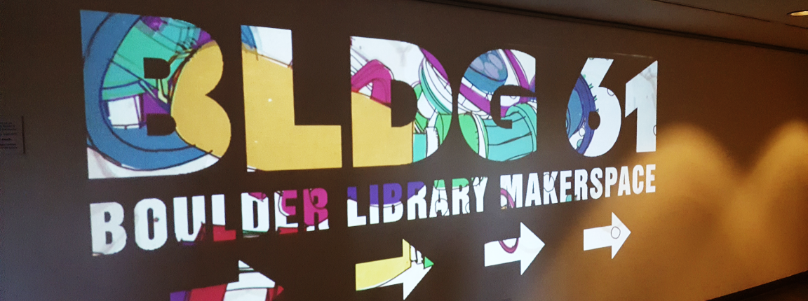

Fall 2016-Summer 2017
I collaborated with Teddy Lowe to create an interactive sign for BLDG61, a maker space in the Boulder Public Library. The sign is projected onto a wall in the library, and uses a Microsoft Kinect to track people in front of it. The sign displays the BLDG61 logo with a mix of abstract visuals and pictures/videos from BLDG61 workshops to fill in the letters. You can reveal more of the background visuals by moving in front of the Kinect, using your body's silhouette to 'paint' over the sign.
You can check out a video of the sign in action below.